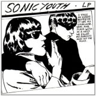

Top 100 Albums of 1990-1999 (Part Five: 60-41)
By No Ripcord Staff
 60. Blur
60. Blur
 59. Massive Attack
59. Massive Attack
As we reach the halfway point, it's difficult not to be reminded of what a great decade the 1990s was. Often mocked and derided by cultural commentators, perhaps it's only now we've sufficient distance from it to truly appreciate it for the great time that it was. And on that note...
[Bubbling Under] | [Writers' Picks] | [100-81] | [80-61] | [60-41] | [40-21] | [20-16] | [15-11] | [10-6] | [5-1]
60. Blur“Parklife”
(Food / SBK – 1994)
Towards the end of Parklife, a high-energy song called Jubilee bursts its way onto the scene. Moving forward with a frantic energy, the album sounds equally ecstatic and nervous. Such a sentiment can sum up Blur’s most renowned album. Although Modern Life Is Rubbish wasn’t as commercially successful as the band would have liked, their follow-up is bursting at the seams with vitality, a forceful drive to get people paying attention. And it succeeded. Girls & Boys opens the album with a buoyant keyboard riff that builds to a joyous, shout-out chorus. The strange decision to have actor Phil Daniels provide the main vocals for the title track pays off with his frantic, cocky delivery. Badhead sounds like a Beatles song without seeming like a rip-off, combining horns and gentle guitar work for a beautiful slow-build. No wonder this effort is often seen as the definitive Britpop album. Joe Marvilli
Playlist: Girls & Boys
59. Massive Attack“Blue Lines”
(Virgin / Circa – 1991)
The debut album from Bristolian collective Massive Attack is almost mythical in how widely regarded it has become. An intoxicating mix of classic soul, dub, reggae and hip-hop, it gave birth to the ephemeral but fondly remembered trip-hop movement by channelling UK club culture and a myriad of influences from their sound system background. The reach of this record should not be underestimated; Blue Lines' after-dark melancholy with blunted beats and smoky vocals went on to influence everyone from Portishead and Björk to The Neighbourhood and Lana Del Rey. One of the most monumental records of the ‘90s, it still buzzes with trailblazing inventiveness over two decades later. Gary McGinley
Playlist: Unfinished Sympathy
58. The Notorious B.I.G.
“Ready To Die”
(Bad Boy – 1994)
Christopher Wallace a.k.a. The Notorious B.I.G. nourished himself with all the raw MCs from the eighties that pictured a life of street-hustle and constant necessity through their lyrics. Brooklyn native Biggie Smalls is the perfect example of a self-made artist that lived and died by the gun without knowing anything else. After the first gangsta efforts provided by Public Enemy, Eric B. & Rakim, Slick Rick, Run-D.M.C. and west coast provocateurs N.W.A., The Notorious B.I.G. is probably the first rapper to articulate street lyrics from a really early age and with unseen skills. His dark charisma and his ability to twist words, invent new ones and break linguistic patterns, put him in the list of top MCs and freestylers of all time. Ready To Die is his first record and it portrays his rhyming stature like no other document. Carlos Dávalos
Playlist: Juicy
57. Pulp
“His ‘N’ Hers”
(Island / 1994)
“I know you won’t believe it’s true / I only went with her because she looked like you, MY GOD!” Has an explosion of pent-up teenage lust ever been so exquisitely vocalised as Jarvis Cocker’s turn on Babies, this album’s finest moment? His 'N’ Hers was the album where Pulp’s sound finally crystallised and they outgrew their student-leaning period of experimentation and unfulfilled promise. From the menacing creep of Joyriders to the kitchen sink drama of Acrylic Afternoons to the bitterness of Do You Remember The First Time?, Jarvis Cocker leaps, cackles and delights us through a salacious fifty minute tour of the seedy underbelly of suburban Britain. They’d go on to bigger and better things with Different Class, but His 'N’ Hers remains a brilliant album from a group on the cusp of immortality. Joe Rivers
Playlist: Babies
56. Lauryn Hill
“The Miseducation Of Lauryn Hill”
(Ruffhouse / Columbia – 1998)
Lauryn Hill arrived with her only studio LP fresh off the back of the disbandment of The Fugees in 1998. Miseducation is, to this day, regarded as one of the greatest neo-soul albums to ever hit the stores. The album’s construction makes a listener feel like a pupil in the classroom that is revisited in interludes throughout its flow, and the intense personal issues explored by Hill are incisive and hard-hitting. From the outset, the raw sounds of plectrums picking, strumming and scratching on guitar strings, and outpourings of confidential streams of consciousness make you feel like an exclusive outlet. The themes of love, religion and unrest within The Fugees as a result of Hill’s refound ability to create incorporated everything from her roots, and allowed for a harmonious musical marriage between hip-hop and soul. Miseducation is an intense listen, and as personal as it gets. Carl Purvis
Playlist: To Zion
55. The Dismemberment Plan
“Emergency & I”
(DeSoto – 1999)
The disaffected inner-city subject of Emergency & I never knows what he wants. On Memory Machine, Travis Morrison’s narrator fantasises about a machine which will mentally erase all his regrets – then later he realises, “The only thing worse than bad memories is no memories at all”. He recounts with irony his lack of a stable partner (I Love A Magician) then goofily yelps out all his sexual frustration (Girl O’Clock). And when he starts to fantasise about leaving (The City), it’s only more apparent how embedded he is in his urban ennui. What at first comes across as energetic, off-kilter power-pop steadily seems like quirkiness masking an unshakeable lack of motivation. Thematically, it is so claustrophobic, but musically it is so breathtakingly inventive, performed with gravity-defying dexterity, that they push towards a liberation which Morrison’s narrator finds always out-of-reach. Stephen Wragg
Playlist: The City
54. Sonic Youth
“Goo”
(DGC – 1990)
Goo was Sonic Youth’s first proper foray into the corporate music machine. Though I’d attempted to align myself with popular underground opinion and hitch myself to their bandwagon with Dirty, it wasn’t until I heard Goo that I was able to fully appreciate what Sonic Youth represented, not only as a band, but also as a cultural barometer. The video for Dirty Boots got me there. Before punk “broke,” as Thurston Moore famously put it, Goo preceded the alternative boom as a high profile release with moderate success, songs like Kool Thing (with a vocal contribution from Public Enemy’s Chuck D) in some ways signalling the change in musical climate pre-Nirvana. I’m continually drawn to the harmonising midway through Disappearer, the heavy isolation in Tunic (Song For Karen) and Mote, and especially Titanium Exposé, which closes the album perfectly. Goo exudes the wisdom of persuasion and refuses to cater. Sean Caldwell
Playlist: Titanium Exposé
53. Nine Inch Nails
“The Downward Spiral”
(Nothing / Interscope – 1994)
Out of all the albums on this list, The Downward Spiral is one of the most aptly titled. Nine Inch Nails’ second full-length record is the story of a rock star losing himself to his own damaged psyche. While he tries to fill the hole in him by screaming about sex (Reptile), religion (Heresy) or his loss of humanity (The Becoming), nothing can help. Trent Reznor’s songwriting and production has never been stronger than it is here. Closer slinks along and builds on a heartbeat rhythm to an explosive finale; March Of The Pigs combines blast beats and screaming guitars in the verses with a keyboard comedown in the chorus; Piggy is a jazzy, bass-heavy calm before the storm; Hurt ends the journey with one of the most fragile melodies in Reznor’s catalogue. While the trip is harrowing for the album’s protagonist, it is thrilling for the listener. Joe Marvilli
Playlist: Closer
52. Genius/GZA
“Liquid Swords”
(Geffen / MCA – 1995)
Calling yourself ‘The Genius’ as your rapping moniker would seem pretty arrogant by most rappers standards, but Liquid Swords is the proof that GZA truly deserves it. On Labels, he manages to rap about what seems like hundreds of record labels in a form of rap double entendre while Killah Hills 10304 is another stand-out track on a stand-out album, where he hardly takes a pause for breath in telling a story of smuggling, drug dealing and bribery. The RZA must also be credited for the sterling production work that accompanies GZA’s words perfectly, to form what is a fitfully atmospheric and unsettling soundscape throughout. Richard Petty
Playlist: Hell’s Wind Staff / Killah Hills 10304
51. Bonnie ‘Prince’ Billy
“I See A Darkness”
(Palace / Domino – 1999)
Having released music as Palace Music, Palace Brothers, and even plain old Will Oldham, I See A Darkness marked the first of many outings under the Bonnie ‘Prince’ Billy banner. It’s perhaps fitting that it took Oldham six albums to (just about) settle upon a moniker - after producing a work of such staggering genius, only a fool would mess with the formula. The emotional impact of songs like A Minor Place and I See A Darkness is just mind-blowing. The latter is arguably Oldham’s very best composition, a beautifully sincere rumination on depression, friendship, and death. The record isn’t all doom and gloom, though. There are elements of hope and flourishes of the dark humour that Oldham has frequently tapped into throughout his long career. Newcomers are often intimidated by artists who have 20 plus records to their name. With Will Oldham, it’s quite simple: start with I See A Darkness and the rest will follow. David Coleman
Playlist: I See A Darkness
50. Blur
“13”
(Food / Parlophone – 1999)
If you had to pinpoint any one album that really demonstrates Blur’s best qualities, it would have to be 13. Sure, they were always pretty unique, but this was the album that proved they could really reinvent their sound - their Kid A moment, if you will. As ever, Graham Coxon’s genius guitar work frequently takes centre stage, but you’d struggle to tell whether it really is a guitar some of the time; an array of effects pedals transforms his sound into something more closely resembling a chainsaw on occasion. At times ferocious (Bugman), often atmospheric (Battle, Trimm Trabb), it’s also deeply touching in places (Tender, No Distance Left To Run) - a real mixed bag, but never less than brilliant. Joel Stanier
Playlist: No Distance Left To Run
49. Daft Punk
“Homework”
(Virgin – 1997)
2013 has seen the public and press alike go crazy for Daft Punk’s Random Access Memories. The retro, funky sounds of the tracks created incredible hype from followers of all types of music before its release, and it’s gone on to be a huge success. But it hasn’t always been this way. In the days before EDM was a regular feature of global chart music, Daft Punk released Homework – an album with an altogether less commercial, more electronic sound to the Daft Punk of the modern day. Unlike Daft Punk’s later work, Homework relies more heavily on beats and samples than on melodies and collaborations. Regarded as one of the most important albums in the history of French house music, it’s a masterclass in electronic composition, but an album that is likely to be best loved by those who consider themselves fans of EDM. Craig Stevens
Playlist: Da Funk
48. Spiritualized
“Ladies And Gentlemen We Are Floating In Space”
(Dedicated – 1997)
With any great band there’s always that moment when the brilliant elements that made them so intriguing before come into contact with some new ingredient that pushes the whole thing over the top. For Spiritualized, it’s when Jason Pierce sings, “Sometimes I have my breakfast right off of the mirror, and sometimes I have it right out of the bottle, come on”, with a new sense of urgency that transcends the trippy lyricism of the previous records. A couple songs go way long, but the riffs of I Think I’m in Love and Cop Shoot Cop justify the time. While some – me amongst them – believe they bettered this record just last year, for most, this is the essential Spiritualized document. Alan Shulman
Playlist: Home Of The Brave
47. Green Day
“Dookie”
(Reprise – 1994)
Lest the grunge era take itself too seriously with Nirvana’s angst and Pearl Jam’s portentousness, along came Green Day to lighten the mood. I guess Billie and the boys figured that as long as everyone was claiming punk was back, someone might as well play some punk just like The Ramones taught us. And like those lovable goofballs, they never wavered from their initial template, laid down with piss and vinegar on this record. They never had to, because the formula (play it fast, play it loud and make it sing) never gets old, whether or not most people want to hear it. Alan Shulman
Playlist: Longview
46. Belle & Sebastian
“Tigermilk”
(Electric Honey – 1996)
Belle & Sebastian appeared on the scene as Britpop’s cavalcade of excess was winding down, right in time to dissipate the hubris. Tigermilk began as a college project started by open mic hopeful Stuart Murdoch, saved for posterity by word of mouth. Its grassroots success was meant to be: the music was a brilliant mix of folk rock and chamber pop, played without rockstar pretensions by a shy group of misfits that rehearsed in a church hall. The group has been placed in the twee category, but there’s nothing cute about the spiralling whine of Electronic Renaissance or the sharp guitar licks of I Could Be Dreaming, and genre-jumping would become standard on subsequent records. Songs like The State I’m In and Expectations have the unburdened candour of a Martin Amis novel. Murdoch views the world as a tragicomedy: sometimes cruel but often handing back a warm kernel of happiness. Angel Aguilar
Playlist: We Rule The School
45. Elliott Smith
“Either/Or”
(Kill Rock Stars – 1997)
By all accounts, Either/Or, or Elliott Smith’s music in general for that matter, should be nowhere near as poignantly simple and emotionally arresting as it is. An absurdly talented musician and philosophy scholar, you’d almost think a man of such stature would consider himself too smart to stick with the singer-songwriter route of writing folky pop songs about his feelings. But while Either/Or does get its name from a favoured philosophical text and the guitar work is always more complex than it sounds, the songs don’t so much go over the listener’s head as they do immediately penetrate the heart. This may be Smith’s first “studio” album, as songs like Pictures Of Me blossom from a full band backing, but it’s mostly the one-on-one assaults – the delicate, fingerpicked Angeles and the intimate, devastating Between The Bars – that still prove the man can pack a crippling emotional punch. Peter Quinton
Playlist: Between The Bars
44. Björk
“Debut”
(One Little Indian – 1993)
Not strictly her debut of course, as she had released a childhood album in 1977, and had been fronting Icelandic indie pioneers The Sugarcubes, but Debut is the birth of Björk as we still know her. It’s still her most uncomplicatedly enjoyable album, packed full of house-flavoured pop and an eclectic roster of instrumental backing from synths and drum machines to Indian strings and harps. The star, of course, is Björk herself. Here the production, courtesy of Nellee Hooper, gives her vocals room to swoop, glide, growl and whisper in a manner to which we have since become accustomed, but at the time was refreshingly (for some, overpoweringly) original. Stand-outs are the bouncing trip-hop of Human Behaviour, the joyous pop anthem Big Time Sensuality, and the sensitive intimacy of Venus As A Boy. Björk would go on to produce more ambitious work, but this remains her one great pop album. David Wood
Playlist: Venus As A Boy
43. Pearl Jam
“Ten”
(Epic – 1991)
Pearl Jam are without doubt one of the most integral parts of establishing alternative rock in the mainstream. In 1992, almost a year after its release, Ten announced itself as a hard-rock masterpiece, showcasing the grit and anger of the grunge scene without sacrificing the choruses and hooks of hard, alternative rock. Every track on the album could have been a single, and there are no half measures at any point throughout. Songs are consistently brought to brink and back again, riffs are huge and radio-friendly, solos are impeccable, and Eddie Vedder’s vocals flawless. Ten relentlessly spawned tracks that could make a listener feel the most conflicting emotions; tracks that reeked heartbreak but were uplifting at the same time, and a recurring motif of realisation and apathy. Vedder’s vocals were the telling factor in this trait, and he remains one of the greatest rock vocalists around today. Carl Purvis
Playlist: Alive
42. Slint
“Spiderland”
(Touch And Go – 1991)
Growing up in the densely populated state of New Jersey, Iʼve never really been imparted with a true sense of what rural is. My only connection to a place as mundane and bucolic as the state of Kentucky is that Iʼve listened to Slintʼs one and only album, Spiderland. Spiderland possesses an acute sense of sprawling space while still remaining dizzyingly claustrophobic. Guitarists Brian McMahan and David Pajo are seemingly separated by miles of vacant farmland, like two people from opposite sides of the state calling out to each other, only to mutually hallucinate an echoed response. In stark contrast are McMahan and Britt Walfordʼs vocals, which act as a sort of backwoods tour guide, leading us through dead-end streets and gravelly roads, all the while delicately whispering local folklore into our ears. Itʼs an unsettling experience to say the least. Andrew Ciraulo
Playlist: Good Morning, Captain
41. Björk
“Homogenic”
(One Little Indian – 1997)
Who do we have really moving pop music forwards these days? There’s something of a recent dearth of great art-pop – we’ve had a few figures like The Knife, Janelle Monáe and Dirty Projectors who keep pushing at the genre, but nothing really comparable to the jaw-dropping magnitude of Homogenic since its release in 1997. Homogenic went in two seemingly contradictory directions at once: on the one hand it has methodical and introspective drum machine patterns and immaculately detailed electronic flourishes, on the other there are monolithic string arrangements and Björk’s enormous vocal performances. What comes out is an album that will sometimes crush you under its waves of sheer sonic force (Jòga, Bachelorette) and sometimes lean towards you with an unnerving intimacy (Unravel, All Is Full Of Love). This is pop music progressed to the point that it can hold you in the palm of its hand. Stephen Wragg
Playlist: Jòga
The second half of our ten-part monolith starts here.
28 June, 2013 - 07:32 — No Ripcord Staff